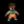

| - | Character | Speed | - | - | Score | - |
|---|---|---|---|---|---|---|
| Aria | 20:25.43 | 874th | 15823 | 30th | ||
| Bard | 9:52.21 | 634th | 7091 | 1693rd | ||
| Bolt | 14:49.95 | 688th | 1741 | 1301st | ||
| Cadence | 13:27.48 | 1252nd | - | - | ||
|  | Diamond | 19:37.71 | 1097th | 4133 | 2661st | |
| Dorian | 14:07.83 | 454th | 3753 | 282nd | ||
| Dove | 7:54.96 | 536th | 730 | 255th | ||
| Eli | 26:08.59 | 912th | 3017 | 1705th | ||
| Mary | 26:07.17 | 938th | 3216 | 1009th | ||
| Melody | 19:16.17 | 1410th | 12201 | 147th | ||
| Monk | 17:03.57 | 231st | 13052 | 25th | ||
| Nocturna | 14:32.27 | 1483rd | 12639 | 644th | ||
| Tempo | 13:11.95 | 1348th | 5591 | 308th | ||
| Coda | - | - | 143 | 315th | ||
| Story | 1:48:29.05 | 486th | 15111 | 445th | ||
| 9char | 3:09:47.00 | 147th | 27001 | 89th | ||
| 13char | - | - | 587 | 698th |
| - | Character | HrdSp | NRSp | RndSp | PhsSp | MysSp | - | HrdSc | NRSc | RndSc | PhsSc | MysSc | DLess |
|---|---|---|---|---|---|---|---|---|---|---|---|---|---|
| Aria | - | - | - | - | - | - | - | 107275th | - | - | - | ||
| Bard | 18:48.8996th | - | 17:11.58234th | 13:26.60200th | 30:23.96758th | 5123476th | 768761st | 8846376th | 29861171st | 11531374th | 0-1-12009th | ||
| Bolt | - | - | - | - | - | - | - | - | - | - | - | ||
| Cadence | - | 32:02.25872nd | - | - | - | 3242882nd | 28681322nd | 15212556th | 1463293rd | 4201817th | 3-1-11010th | ||
| Diamond | - | - | - | - | - | - | - | - | - | - | - | ||
| Dorian | - | - | - | - | - | - | - | - | - | - | - | ||
| Dove | - | - | - | - | - | - | - | 58817th | - | - | 9-4-325th | ||
| Eli | - | - | - | - | - | - | - | - | - | - | - | ||
| Mary | - | - | - | - | - | - | - | - | - | - | 0-1-1138th | ||
| Melody | - | - | 29:31.42257th | - | - | - | - | 5510189th | - | - | - | ||
| Monk | - | 28:11.3917th | - | 31:59.4645th | - | 85537th | 48386th | 72350th | 77125th | - | 4-5-322nd | ||
| Nocturna | 29:32.09886th | - | - | - | - | 52851478th | - | - | - | - | - | ||
| Tempo | - | - | - | - | - | - | - | - | - | - | - | ||
| Coda | - | - | - | - | - | - | - | - | 13796th | - | 0-1-174th |
Last Updated:2021/05/30 21:08